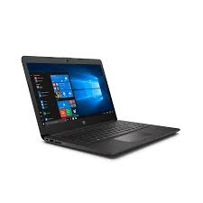

lenovo
Portatil i7 lenovo
1223Portatil i7 lenovo
1223
Portatil i7 lenovo
1223Portatil i7 lenovo
16GB RAM
512GB SSD
Disco duro HDD No aplica RAM expandible No Tipo de teclado Incorporado a chasis Idioma del teclado Español Entradas HDMI 1 Entradas USB 2 Peso del producto 1.38 kg Marca Lenovo Incluye No Capacidad de almacenamiento No aplica Tamaño de la pantalla 14 Modelo Ideapad 5 País de origen China Garantía 1 año Resolución de pantalla FHD Conectividad/conexión Wifi Cuenta con bluetooth Sí Condición del producto Nuevo Pantalla touch No Memoria RAM 16GB Características de la pantalla No aplica Alto 1.9 cm Ancho 32 cm Núcleos del procesador Quad core Duración de la batería (hrs) No aplica Profundidad 21 cm Sistema operativo Windows 11 Tasa de refresco nativa No aplica Tipo de computador Notebook Procesador específico txt Intel core i7 Marca tarjeta gráfica No aplicaPortatil Asus K513Ea-Bq2213 Core I7
15,6 Pulgadas Fhd Endless
Ssd 512GB
8 GB